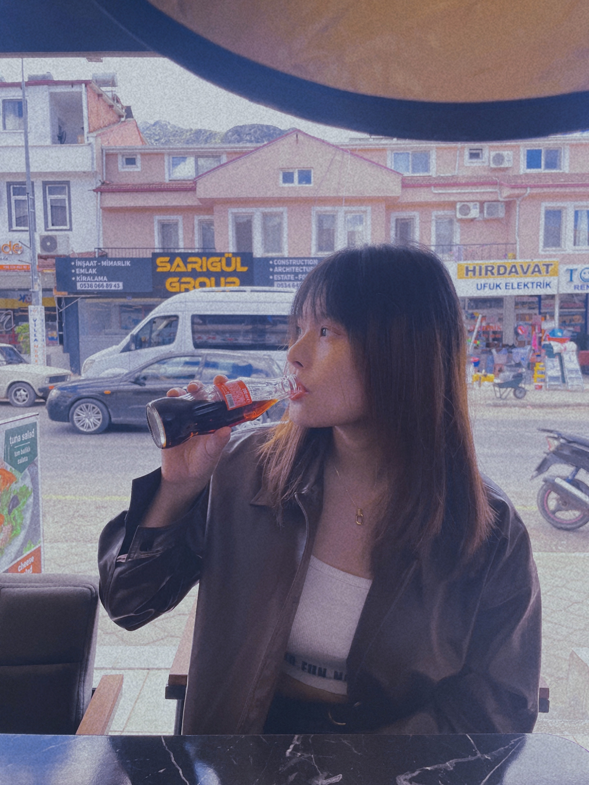
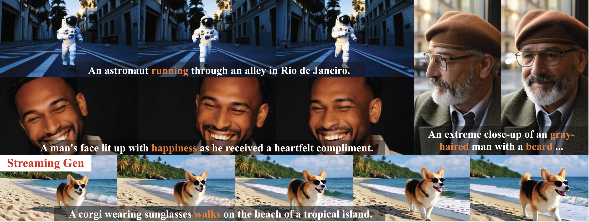
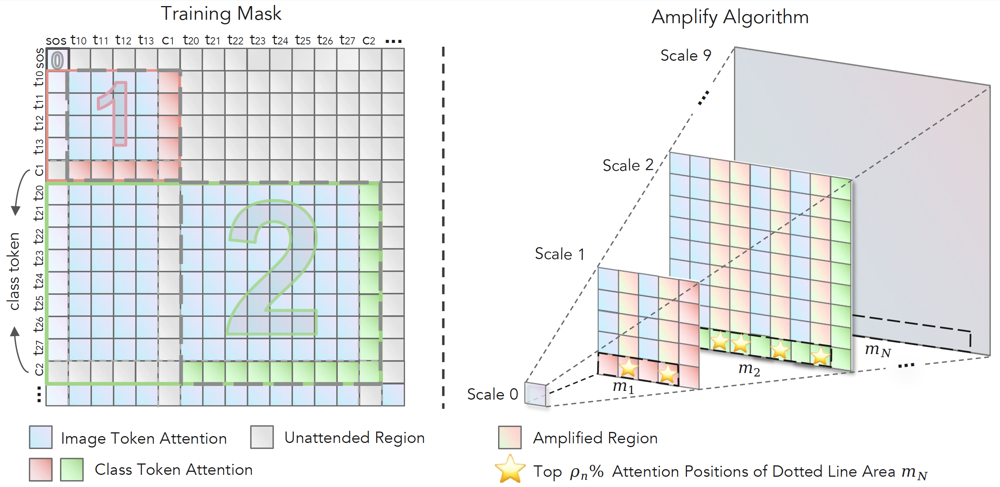
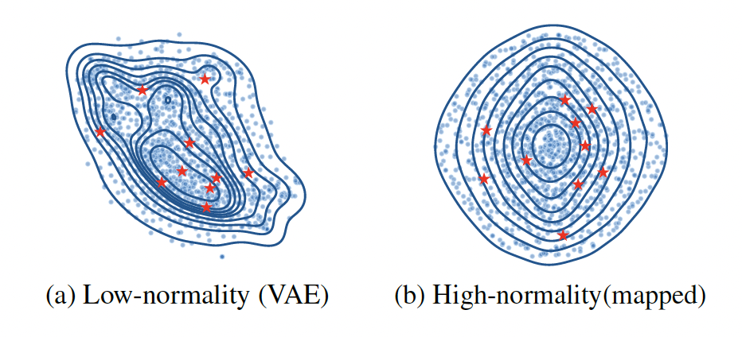
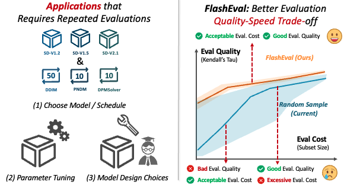
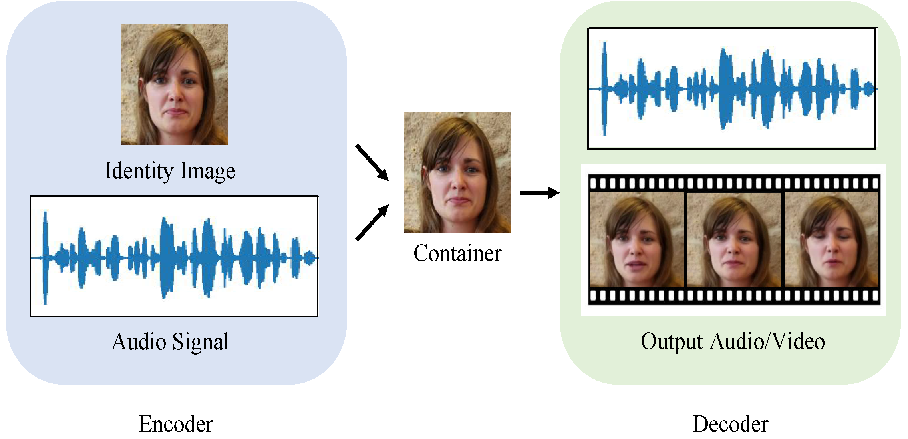
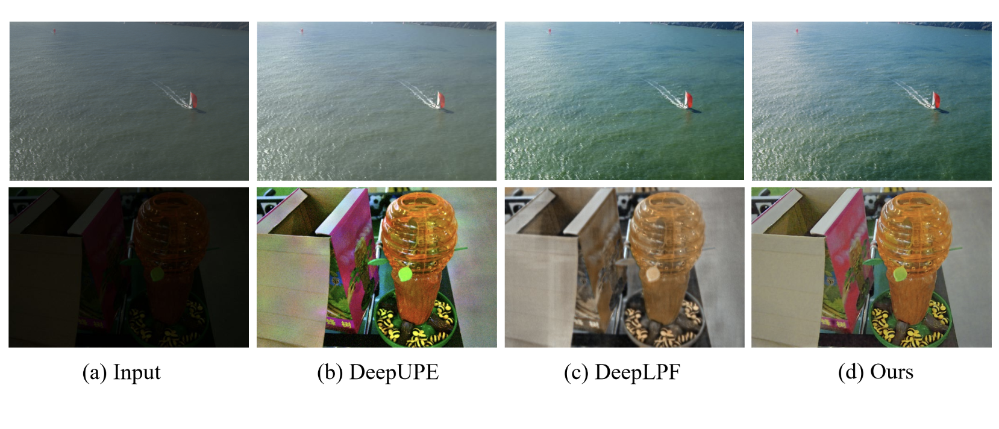

|
Lin Zhao I am a second-year Ph.D. student in College of Engineering, Northeastern University, supervised by Prof. Yanzhi Wang and Prof. Xue Lin. My research interests lie in efficient AI and generative model. Currently, I focus on improving the efficiency and quality of video generation models. I got my M.S. and B.S. degrees from Nankai University. Open to collaboration, curious conversations, or just making new friends — feel free to say hi! |

Photo by Xinru Jiang |
Selected Publications |
|  |
S2DiT: Sandwich Diffusion Transformer for Mobile Streaming Video Generation
Lin Zhao*, Yushu Wu*, Aleksei Lebedev, Dishani Lahiri, Meng Dong, Arpit Sahni, Michael Vasilkovsky, Hao Chen, Ju Hu, Aliaksandr Siarohin, Sergey Tulyakov, Yanzhi Wang, Anil Kag, Yanyu Li Preprint We propose S²DiT, a Sandwich diffusion transformer for mobile Streaming video generation. [paper] |
|  |
HierAmp: Coarse-to-Fine Autoregressive Amplification for Generative Dataset Distillation
Lin Zhao*, Xinru Jiang*, Xi Xiao, Qihui Fan, Lei Lu, Yanzhi Wang, Xue Lin, Octavia Camps, Pu Zhao, Jianyang Gu Computer Vision and Pattern Recognition (CVPR), 2026 We propose HierAmp, which enhances dataset distillation by amplifying hierarchical semantics across Vision Autoregressive scales to improve discriminative structural representation. [paper] [code] |

|
Prompt-based Adaptation in Large-scale Vision Models: A Survey
Xi Xiao*, Yunbei Zhang*, Lin Zhao*, Yiyang Liu*, Xiaoying Liao, Zheda Mai, Xingjian Li, Xiao Wang, Hao Xu, Jihun Hamm, Xue Lin, Min Xu, Qifan Wang, Tianyang Wang, Cheng Han Transactions on Machine Learning Research (TMLR), 2026 We provide a systematic review and categorization of recent PA algorithms and their practical implementations. [paper] [code] |
|  |
Taming Diffusion for Dataset Distillation with High Representativeness
Lin Zhao, Yushu Wu, Xinru Jiang, Jianyang Gu, Yanzhi Wang, Xiaolin Xu, Pu Zhao, Xue Lin International Conference on Machine Learning (ICML), 2025 We propose D3HR, which systematically investigates key issues in current diffusion-based methods and, based on these insights, introduces a new paradigm for diffusion-based dataset distillation. [paper] [code] |
|  |
FlashEval: Towards Fast and Accurate Evaluation of Text-to-image Diffusion Generative Models
Lin Zhao*, Tianchen Zhao*, Zinan Lin, Xuefei Ning, Guohao Dai, Huazhong Yang, Yu Wang Computer Vision and Pattern Recognition (CVPR), 2024 We propose FlashEval, which can identify a representative subset to speed up the evaluation of text-to-image Diffusion models (10x). [project] [paper] [code] |
|  |
THInImg: Cross-modal Steganography for Presenting Talking Heads in Images
Lin Zhao, Hongxuan Li, Xuefei Ning, Xinru Jiang Winter Conference on Applications of Computer Vision (WACV), 2024 We propose THInImg, which can present up to 80 seconds of high quality talking-head video (including audio) in an identity image with 160×160 resolution. [paper] |
|  |
Deep Symmetric Network for Underexposed Image Enhancement with Recurrent Attentional Learning
Lin Zhao*, Shaoping Lu*, Tao Chen, Zhenglu Yang, Ariel Shamir International Conference on Computer Vision (ICCV), 2021 We propose an invertible framework to solve both underexposed image enhancement and low-light image enhancement problems in a unified structure. [project] [paper] [code] |
Work Experiences |
|
Research Intern, Creative Vision Group, Snap Inc. Jun 2025 - Nov 2025, Santa Monica, CAWorked on Efficient Text-to-video Diffusion |
|
|
Research Intern, Infinigence AI Jul 2023 - Dec 2023, Beijing, ChinaWorked on Efficient Diffusion Evaluation |
|
|
Research Intern, Media Computing Group, Microsoft Research Asia Jul 2022 - Dec 2022, Beijing, ChinaWorked on Talking-head Generation and Video Compression |
|
|
Research Intern, Multimodal Group, Sensetime Mar 2022 - May 2022, Beijing, ChinaWorked on Video Editing |
Selected Honors & AwardsGongneng Scholarship. 2021 Graduate Student Scholarship. 2020 Comprehensive First-class Scholarship (Top 5%). 2018, 2019 Honorable Mention, Mathematical Contest in Modeling. 2019 |
MiscI was born and raised in Harbin, China. I especially love little monkeys; they are just too adorable! |

{kind=link}
{kind=link}
{kind=link}
|
|